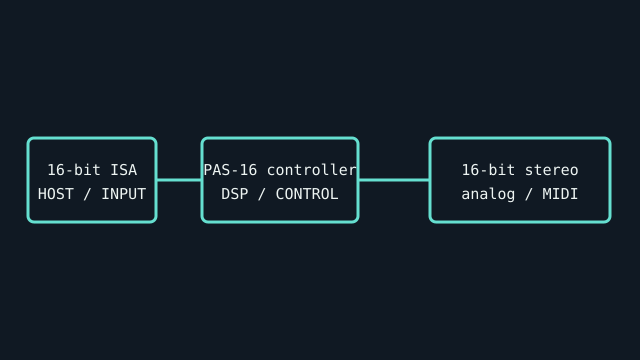

[ INDIVIDUAL COMPONENT // SOUND HARDWARE ]
Media Vision Pro AudioSpectrum 16 (PAS-16)
The PAS-16 is a 16-bit ISA sound card from Media Vision’s Pro AudioSpectrum line; board revisions and bundled CD-ROM interfaces vary.

IDENTIFICATION: Match the complete printed model, revision, bundled breakout, and accessory markings. Specs below describe this named model; family-level variants are not assumed interchangeable.
Specifications
| Catalog subcategory | ISA legacy sound cards |
|---|---|
| Product ID | Media Vision Pro AudioSpectrum 16; commonly identified as PAS-16 / 650-series ISA assembly |
| Bus / host | 16-bit ISA expansion bus; DOS resource settings and Windows driver version must match the card revision. |
| Connectors and I/O | Line-level stereo out, stereo line-in, microphone input, game/MIDI port, internal audio headers, plus optional onboard CD-ROM interface on some PAS-16 revisions. Verify the rear bracket and actual interface chips. |
| Chipset / conversion / protocol | 16-bit stereo playback and recording, with support documented up to 44.1 kHz. PAS-16 audio controller/mixer design includes MVD101 and MVA-508B family markings on documented revisions, plus OPL3-compatible FM; exact component population is board-specific. |
| Drivers / operating systems | Manufacturer software targeted DOS and Windows 3.x/9x-era hosts. Use a PAS-16-specific driver and configuration utility; modern OS support is not claimed. |
| Variant compatibility | PAS-16 revisions (including different 650-series assemblies) can vary in CD-ROM interface and board layout. Do not assume Media Vision Pro AudioSpectrum 8, PAS+, or other PAS models share the same driver/resource setup. |
Service & preservation
Photograph the full board ID, chip labels, jumpers, and CD-ROM connector before cleaning. Preserve original installation media and note I/O, IRQ, DMA, and CD interface. Inspect ISA contacts and electrolytics; do not connect undocumented internal CD pinouts.
Identification and compatibility checks
- Photograph the product/model label, board silkscreen/revision, connector faces, cable assemblies, and accessory part numbers before installation.
- Check electrical bus and host slot or USB/MIDI protocol support against the exact manual; connector shape alone does not establish compatibility.
- For analog I/O, confirm line/mic/instrument level, phantom-power behavior, channel map, and direction from the model-specific documentation before connecting equipment.
- When software or driver support is uncertain, preserve the last known-good installer and document tested host OS, driver version, and device identifier.
Primary manufacturer & standards sources
- Media Vision — Pro Audio 16 The Official Book (1992), digitized copyContemporary manufacturer documentation and original software/media archive.
- Media Vision Pro AudioSpectrum 16 manual listingArchived model-specific manufacturer manual scan; system-specific installation details apply.
- Internet Archive — PAS-16 driver-media catalogPreserved driver disks for model/revision verification.
Source selection is model-specific where an original manual or vendor product/support page exists. Archived scans preserve manufacturer documentation; operating-system claims are limited to what the cited product/manual materials identify.